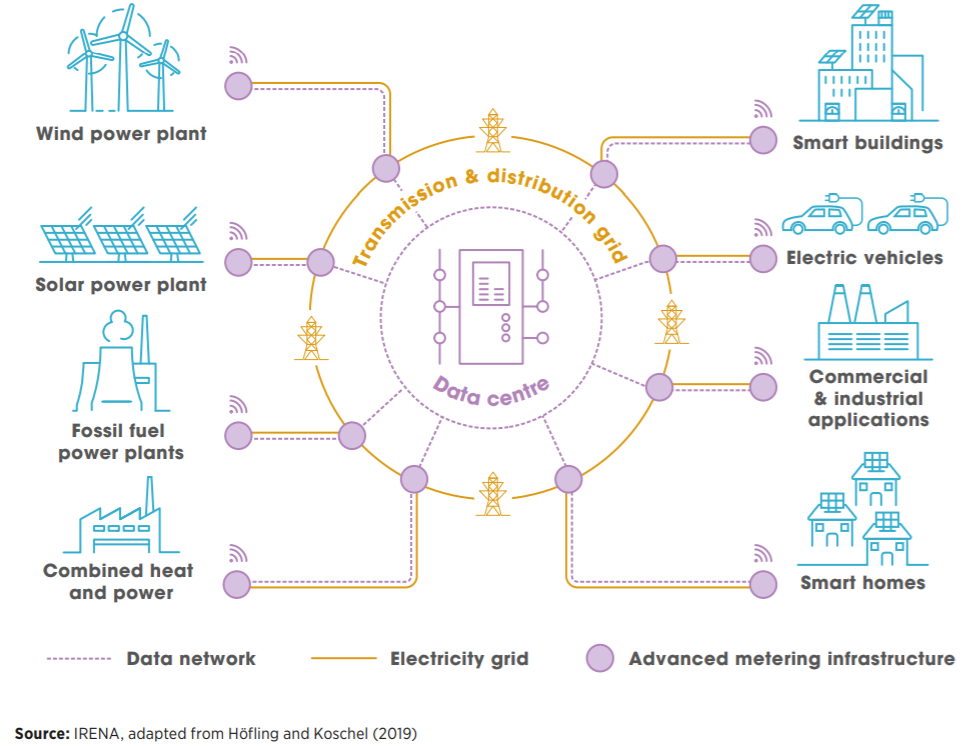

The Internet of Things (IOT) is where everyday objects are equipped with microcontrollers, transceivers, for digital communication. It is defined as a network that can connect any object with the Internet based on a protocol for exchanging information and communication among various smart devices. This enables these objects and devices to communicate with each other and the user. The IOT concept makes the internet more immersive as it becomes part of the environment we use on everyday things. A goal of IOT is to increase the number of things that are automated in our everyday lives increasing efficiency in how we operate.
The state of the art with IOT is the ever-improving communication between different devices and objects in our economy. This means that there is less need or interaction needed from human users. Ultimately only micro interaction will be needed or is only needed for many things. For example, using your mobile phone to connect different devices in your home and having settings or routines pre-set. The end user then only needs to check their phone to operate or monitor. This can be setting temperature, fridge, vacuum, security system etc that can link with the digital world doing many operations seamlessly. Adding to the ease of use is voice technology were some of these operations can be operated to your voice.
In business, state of the art goes a bit further when adding better communication technology. There are many systems and industries that through an IOT network are able to work autonomously. This is used in warehouses for device to device communication for picking and packing services. It is also used and has the potential to be used to make everything “Smart”. In this instance Smart is having the ability to work better to some degree, potentially using network data or having autonomy for tasks.
Looking at an example below (figure 1) shows how the IOT network that can be in our homes, commercial/industry, electrical vehicles, smart buildings can all be connected to the various different renewable power sources. IOT creates big data that presents a challenge to be used for real-time analysis and solutions. Be able to sort this information allows more operations and the network to grow to even more things changing the environment around us. IOT in figure 1, allows for optimization of the energy grid with a Smart Grid. The Smart Grid presents solutions for the traditional power grid using a variety of information and communication technologies.
Smart buildings, smart homes, electric vehicles and applications for IOT in commercial and industrial operations can all be done now. One big obstacle for IOT becoming part of normal in all of these places is the upfront cost for these devices and capital goods. Another big obstacle is cybersecurity.
Smart buildings, smart cars, smart homes are just the beginning. As the technologies and infrastructure improves it will not only lead to Smart Grid solutions but Smart Cities. This creates an interconnection between key industry and service sectors. Meaning things such as Smart Governance, Smart Mobility, Smart Utilities, Smart buildings and Smart Environment. Making everything Smart through IOT and information sharing has the potential to increase efficiencies in so many areas. There are obstacles that are stopping this happening.
Making this possible would be removing or solving some of the obstacles spoken about. Cybersecurity is a risk as a breach or problem could affect so many areas. As spoken about this could be cities, so hospitals, essential services and even medical devices. To really make this possible better regulations and centre decision making with a focused goal is needed. At this time, it also re quires updating lots of older technologies embedded in our society. This has a big upfront cost and therefore is less likely to be used to create Smart Cities as most governments would not spend huge amounts of taxpayer dollars on these things.
IOT will continue to change our lives with the little things. What will likely change is things like microwaves, washing machines, dishwashers, security etc everyday devices will become cheaper to be made Smart and operated remotely or automated.
In terms of the larger more visible changes, there is not likely to be a large impact in the near future due to costs, regulation and different interest groups.
As of right now it does not affect me in a visible way. Different people have different levels of interconnectivity with their devices and it effects some more than others. It will affect the way I can manage my home being able to clean remotely, organising, temperature, security etc. However, that’s up to the individual, not society as mentioned. Having Smart devices is something that will continue but won’t affect individuals that much unless it’s a conscience choice.